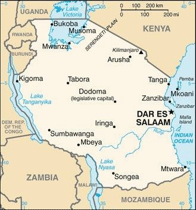
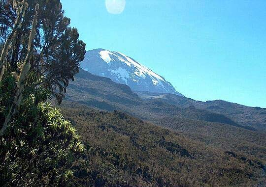

Tanzania contains some of Africa’s most iconic national parks and
famous paleoanthropological sites, and its diverse cultural heritage
reflects the multiple ethnolinguistic groups that live in the country.
Its long history of integration into trade networks spanning the
Indian Ocean and the African interior led to the development of
Swahili as a common language in much of east Africa and the
introduction of Islam into the region.
A number of independent coastal and island trading posts in what is
now Tanzania came under Portuguese control after when they began
to take control of much of the coast and Indian Ocean trade. By ,
the Sultanate of Oman had become the dominant power in the region
after ousting the Portuguese who were also facing a series of local
uprisings.
During the following hundred years, Zanzibar - an archipelago off the
coast of Tanzania - became a hub of Indian Ocean trade, with Arab and
Indian traders establishing and consolidating trade routes with
communities in mainland Tanzania that contributed to the expansion of
the slave trade. Zanzibar briefly become the capital of the Sultanate
of Oman before it split into separate Omani and Zanzibar Sultanates in
. Beginning in the mid-1800s, European explorers, traders, and
Christian missionaries became more active in the region.
The Germans eventually established control over mainland Tanzania -
which they called Tanganyika - and the British established control
over Zanzibar. Tanganyika later came under British administration
after the German defeat in World War I. Tanganyika gained independence
from Great Britain in , and Zanzibar followed in as a
constitutional monarchy.
In Tanganyika, Julius Nyerere, a charismatic and idealistic socialist,
established a one-party political system that centralized power and
encouraged national self-reliance and rural development. In , a
popular uprising overthrew the Sultan in Zanzibar and either killed or
expelled many of the Arabs and Indians who had dominated the isles for
more than 200 years. Later that year, Tanganyika and Zanzibar combined
to form the United Republic of Tanzania, but Zanzibar retained
considerable autonomy.
Their two ruling parties combined to form the CCM party in
. Nyerere handed over power to Ali Hassan Mwinyi in
and remained CCM chair until . Tanzania held its first
multi-party elections in , but CCM candidates have continued to
dominate politics.
Political opposition in Zanzibar has led to four contentious elections
since , in which the ruling party claimed victory despite
international observers' claims of voting irregularities. In , 35
people in Zanzibar died when soldiers fired on protestors following
the election.
John Magufuli won the 5 presidential election, and the CCM won a
two-thirds majority in Parliament. He was reelected in and the
CCM increased its majority in an election that was also critiqued by
observers. Magufuli died in while in office and was
constitutionally succeeded by his vice president, Samia Suluhu Hassan.

Tanzania map showing major cities as well as parts of surrounding
countries and the Indian Ocean.

View of the summit of Mount Kilimanjaro.
Environment
Current Environmental Issues
Water pollution
Improper management of liquid waste
Indoor air pollution caused by the burning of fuel wood or
charcoal for cooking and heating
Soil degradation
Deforestation
Desertification
Destruction of coral reefs threatens marine habitats
Wildlife threatened by illegal hunting and trade (especially for
ivory)
Loss of biodiversity
Solid waste disposal
Climate
Tanzania's climate varies from tropical weather along coast to
temperate weather in highlands.
Total Water Withdrawal
Use
Amount in m3
Year
Municipal
527 million
est.
Agricultural
25 million
est.
Industrial
4.632 billion
est.
Economy
Economic Overview
Tanzania has an emerging lower middle-income East African economy.
This resource-rich country has growing tourism, strong post-pandemic
recovery from hospitality, electricity, mining, transit sectors,
declining poverty and stable inflation. However, they do face
gender-based violence economic and labor force disruptions.
GDP Composition by
Sector of Origin
Sector of Origin
% of Composition
Year
Agriculture
23.4%
est.
Industry
28.6%
est.
Services
47.6%
est.
Exported Commodities
gold
cashews
copper
precious metals
legumes
(As of )
Transnational Issues
International Disputes
Tanzania has only had one international dispute with bordering
country
Malawi over the
boundary in Lake Nyasa (Lake Malawi) and the meandering Songwe River. Malawi contends that the entire
lake up to the Tanzanian shoreline is its territory, while Tanzania
claims the border is in the center of the lake.
Refugees and Internally Displaced Persons
No. of Refugees
Country of Origin
Year
80,043
Democratic Republic of the Congo
126,608
Burundi
Illicit Drugs
Tanzania is a significant transit country for illicit drugs in East
Africa. International drug-trafficking organizations and courier
networks transit through Tanzania to smuggle heroin and
methamphetamine from Southwest Asia. Tanzania produces cannabis
products and khat for domestic consumption and regional and
international distribution. Traffickers influence politicians, law
enforcement, and others in positions of power with money. ()